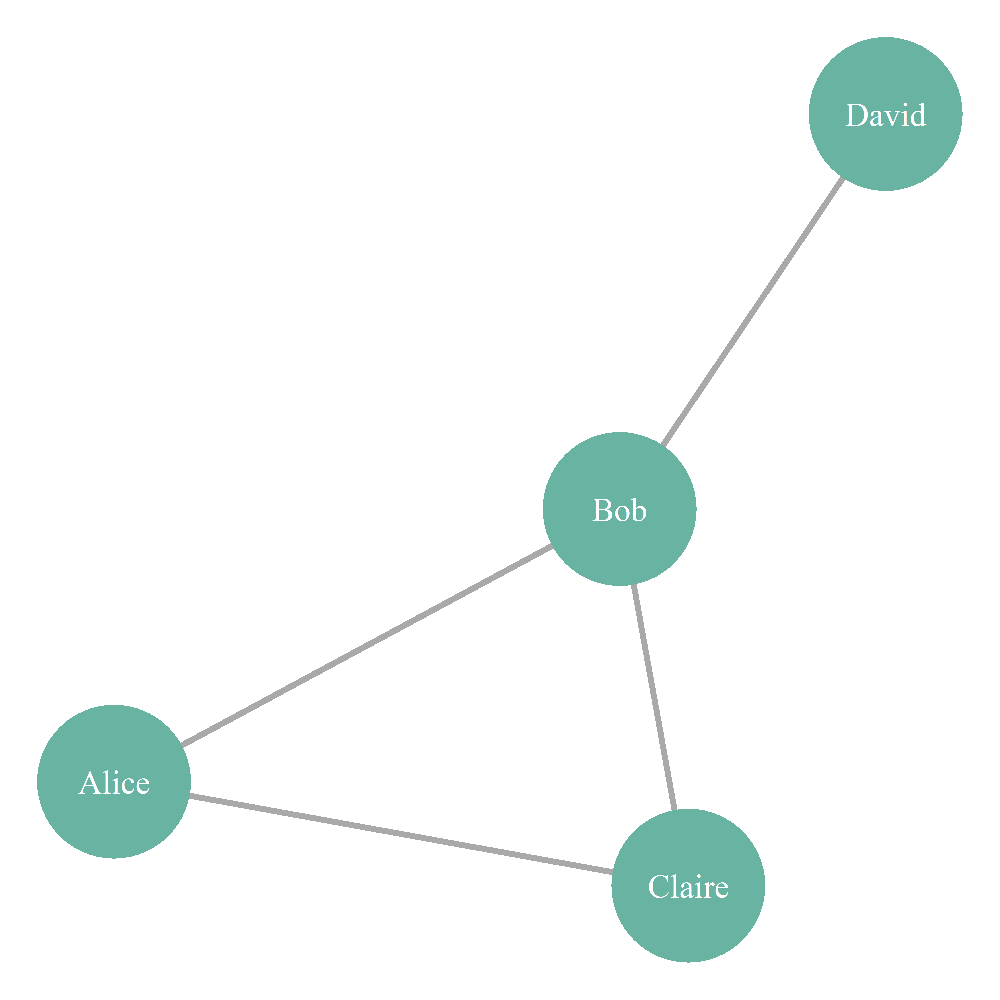
Analyse de réseaux (Network Science)
Paris Dauphine - PSL
{igraph}, {tidygraph}, {ggraph}, {visNetwork}, {networkD3}.Imaginez que vous êtes responsable marketing d’une marque de sneakers.
Questions :
| Contexte | Noeuds | Liens | Question marketing |
|---|---|---|---|
| Réseaux sociaux | Comptes, hashtags, vidéos | Follow, mention, partage, co-occurrence | Qui influence qui au global ? |
| E-commerce | Produits, clients | Co-achat (bundle), clics successifs | Que recommander à qui ? |
| Parrainage (Referral) | Parrains, filleuls | Parrain \(\to\) Filleul | Quels clients ont le plus de levier viral ? |
| Influence / Marque | Influenceurs, Créateurs | Collaboration, audience partagée, mentions | Quels profils activer pour lancer mon nouveau produit ? |
Le défi de la marque : le Seeding
Dans le cas de l’influence, la marque cherche à résoudre un problème d’optimisation : « Si je ne peux payer que 5 influenceurs (les seeds), lesquels choisir pour toucher le maximum de cibles uniques (le reach) sans payer pour des audiences qui se chevauchent (overlap) ? »
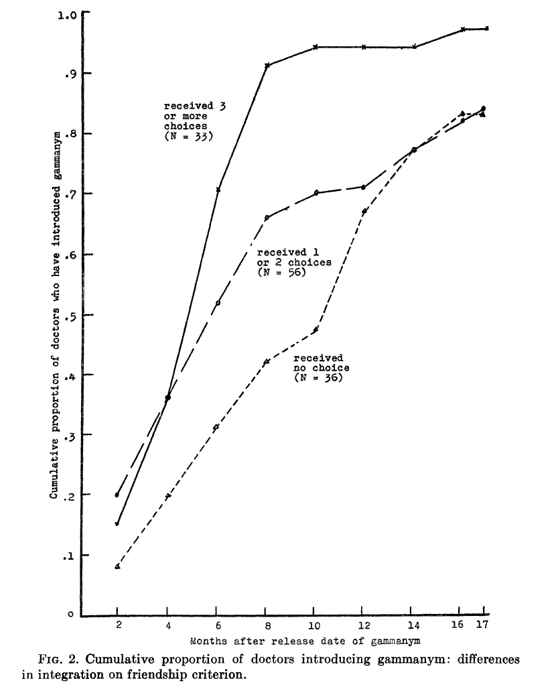
Coleman, Katz, and Menzel (1957) observent les courbes ci-contre.
Van den Bulte and Lilien (2001) réanalysent les données quarante ans plus tard.
Revue critique
Une belle courbe en S n’est pas toujours une preuve d’influence sociale. Sans contrôler les variables externes, on risque de confondre viralité et réaction simultanée à une campagne publicitaire.
L’objectif : mesurer la “distance” sociale moyenne entre deux inconnus aux États-Unis.
La question : comment l’information (ex. : trouver un emploi) circule-t-elle vraiment ?
Le constat : les modèles aléatoires classiques (distribution en cloche) échouent à décrire les grands réseaux réels (Web, citations).
Le contexte de l’étude
Résultats et tendances temporelles
Conclusion
Quelle décision marketing prendre ?
Une vidéo de référence (Fouloscopie) qui illustre la formation des hubs (loi de puissance), le clustering et l’homophilie.
Si la vidéo ne s’affiche pas, lien direct : Fouloscopie - Les 3 lois de L’ATTRACTION SOCIALE
| Thème | Article | Insight (La réalité vs le mythe) | Action marketing |
|---|---|---|---|
| 1. La structure | Katona, Zubcsek, and Sarvary (2011) | Densité > Volume. Ce n’est pas le nombre d’amis qui compte, mais le clustering (amis connectés entre eux). | Ne visez pas des stars isolées, visez des grappes denses pour crédibiliser le message. |
| 2. La cible | Iyengar, Van Den Bulte, and Valente (2011) | Réel > Déclaré. Les leaders qui disent l’être (sondages) le sont rarement dans les faits (sociométrie). | Arrêtez le déclaratif. Identifiez les hubs via la donnée comportementale (qui suit qui ?). |
| 3. Le produit | Wang, Aribarg, and Atchadé (2013) | Contexte > Universel. Produit Tech/Risqué \(\to\) besoin d’Expert. Produit Mode \(\to\) besoin de Populaire. | Adaptez le profil de l’influenceur à la nature du risque perçu par le client. |
| 4. Le timing | Iyengar, Van Den Bulte, and Lee (2015) | Dynamique > Statique. L’influence change : Informationnelle au début (Essai), Normative ensuite (Rétention). | Changez de levier dans le temps : Experts pour acquérir, Proches pour retenir. |
| 5. L’optimisation | Chen, Van Der Lans, and Phan (2017) | Pondéré > Binaire. Tous les liens ne se valent pas. La récence et l’intensité du lien sont prédictifs. | Pondérez les arêtes du graphe (intensité/temps) pour doubler l’efficacité du seeding. |
Tip
En résumé
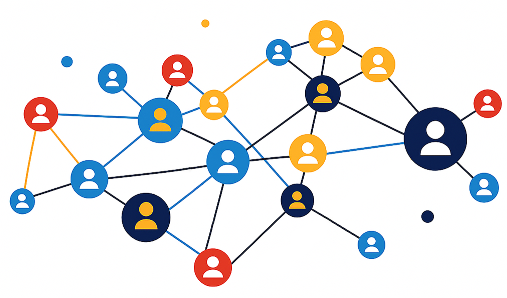
Sommets ou noeuds (vertices / nodes) : les points du graphe représentant les entités (personnes, villes, pages web…).
Arêtes ou liens (edges / links) : les lignes reliant les sommets qui matérialisent une relation ou une connexion.
Pondération ou poids (weight) : la valeur associée à une arête pour quantifier la relation (distance en km, fréquence des échanges, débit…).

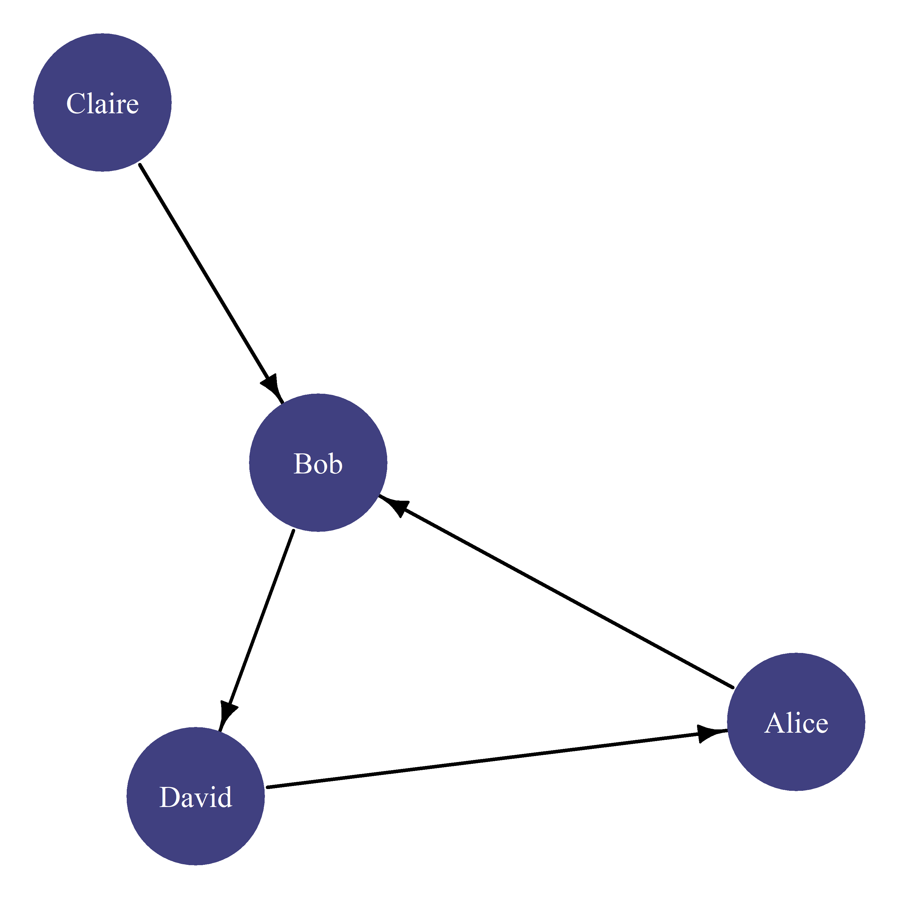
\[G = (V, E)\]
En mathématiques (et dans igraph), le graphe \(G\) est un couple composé de deux ensembles :
1. L’ensemble des sommets (\(V\) comme Vertices) : c’est la liste des acteurs. \[V = \{Alice, Bob, Claire, David\}\]
2. L’ensemble des arêtes (\(E\) comme Edges) : c’est la liste des couples connectés. Pour ton exemple orienté, cela s’écrit comme des couples ordonnés \((Source, Cible)\) :
\[E = \{(Alice, Bob), (Claire, Bob), (Bob, David), (David, Alice)\}\]
Pourquoi cette notation est importante ?
Cette notation peut être utilisée en R pour créer des graphes (slide suivante)
# 1. On définit G (Alice vers Bob, etc.)
g <- graph_from_literal( Alice-+Bob, Claire-+Bob, Bob-+David, David-+Alice )
# 2. On interroge V (Vertices)
cat("--- L'ensemble V (les sommets) ---\n")--- L'ensemble V (les sommets) ---+ 4/4 vertices, named, from 6c034bc:
[1] Alice Bob Claire David
--- L'ensemble E (les arêtes) ---+ 4/4 edges from 6c034bc (vertex names):
[1] Alice ->Bob Bob ->David Claire->Bob David ->Alice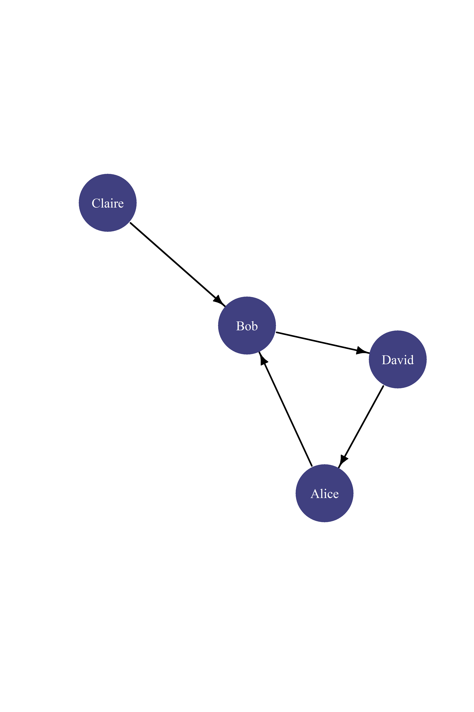
La logique : au lieu de dire “qui connaît qui”, on regarde “qui participe à quoi”. Les colonnes ne sont plus des personnes, mais des événements ou des liens (\(e_1, e_2...\)).
| \(e_1\) (Lien A-B) |
\(e_2\) (Lien C-B) |
\(e_3\) (Lien B-D) |
\(e_4\) (Lien D-A) |
|
|---|---|---|---|---|
| Alice | 1 | 0 | 0 | 1 |
| Bob | 1 | 1 | 1 | 0 |
| Claire | 0 | 1 | 0 | 0 |
| David | 0 | 0 | 1 | 1 |
Lecture (Colonne \(e_1\)) : Alice (1) et Bob (1) sont les deux acteurs impliqués dans la relation n°1.
Pourquoi utiliser ce format compliqué ? : c’est le format idéal pour le Marketing (graphes bipartis) :
edges <- data.frame(
from = c("Alice", "Alice", "Bob", "Claire", "David", "Eva"),
to = c("Bob", "Claire", "David", "Eva", "Alice", "Bob"),
weight = c(3, 1, 2, 1, 1, 4)
)
g <- graph_from_data_frame(edges, directed = TRUE)
plot(g,
edge.arrow.size = 1, vertex.size = 30, vertex.color = "steelblue", vertex.label.color = "white",
edge.width = E(g)$weight, # L'épaisseur dépend du poids
edge.label = E(g)$weight # On affiche le chiffre pour la pédagogie
)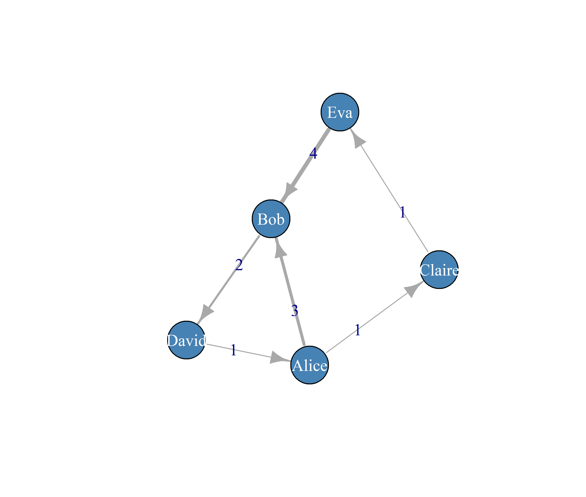
Pourquoi pondérer les liens ?
Se limiter à un graphe binaire (relation présente ou absente) est souvent trop simpliste. La pondération permet de qualifier la valeur réelle de la relation :
Conséquence stratégique : ignorer ces poids risque de fausser le ciblage. Un noeud ayant peu de liens, mais très intenses et récents, est souvent un levier d’influence bien plus puissant qu’un noeud très connecté mais aux relations superficielles ou inactives.
tbl <- tbl_graph(edges = edges, directed = TRUE)
tbl_undirected <- tbl |>
convert(to_undirected)
tbl_undirected |>
activate(nodes) |>
mutate(
deg = centrality_degree(mode = "all"),
community = as.factor(group_louvain())
) |>
ggraph(layout = "fr") +
geom_edge_link(aes(width = weight), alpha = 0.4, colour = "grey40") +
geom_node_point(aes(size = deg, fill = community), shape = 21, colour = "grey15") +
geom_node_text(aes(label = name), repel = TRUE, size = 4) +
scale_edge_width(range = c(0.5, 2)) +
theme_void()Packages utiles
{igraph} : structures et mesures.{tidygraph} : pipeline dplyr pour réseaux.{ggraph} : grammaire de la viz de graphes.{visNetwork} / {networkD3} : interactif HTML (force-directed).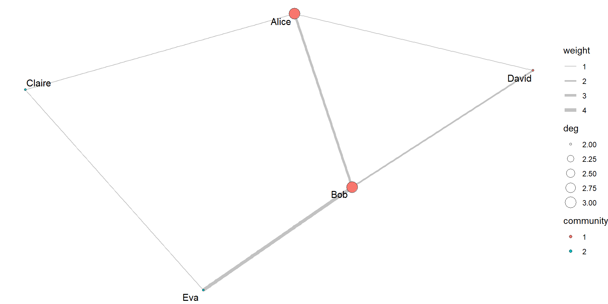
{networkD3} (ne gère pas les graphes orientés)karate_edgelist <- read.csv("https://ona-book.org/data/karate.csv")
# création du graphe igraph à partir de l’edgelist (non orienté)
g <- igraph::graph_from_data_frame(karate_edgelist, directed = FALSE)
# tidygraph à partir du graphe igraph
tbl_undirected <- as_tbl_graph(g) # g est déjà non orienté
# visu interactive simple
networkD3::simpleNetwork( karate_edgelist,height = "800px", width = "1000px", fontSize = 14, linkDistance = 80){visNetwork}# 1. Edges pour visNetwork : colonnes from / to
edges <- data.frame(
from = karate_edgelist$from,
to = karate_edgelist$to
)
# 2. Nodes pour visNetwork
nodes_vis <- data.frame(id = V(g)$name)
nodes_vis$label <- nodes_vis$id
nodes_vis$title <- nodes_vis$id
visNetwork(nodes_vis, edges, width = "100%", height = "800px") |>
visNodes(
shape = "dot",
size = 20,
color = list(background = "steelblue", border = "black")
) |>
visEdges(
color = "#999999",
arrows = "" , # graphe non orienté → pas de flèches
smooth = TRUE
) |>
visOptions(
highlightNearest = list(enabled = TRUE, degree = 1, hover = TRUE),
nodesIdSelection = TRUE
) |>
visLayout(randomSeed = 123){visNetwork}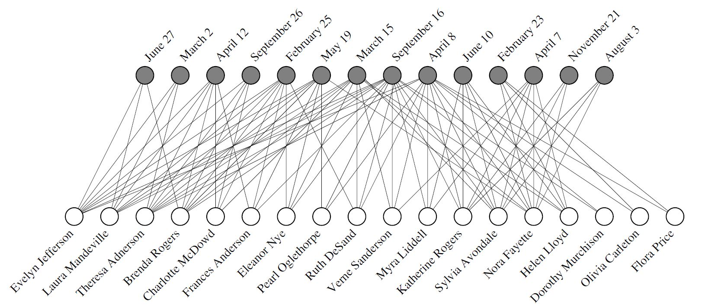
Une étude traçant 18 femmes (cercles blancs) et leur présence à 14 événements sociaux (cercles gris).
Cliques & structure : l’enchevêtrement des lignes révèle visuellement l’existence de deux groupes sociaux distincts au sein de la population.
Mr Hi Actor 2 Actor 3 Actor 4 Actor 5 Actor 6 Actor 7 Actor 9
16 9 10 6 3 4 4 5
Actor 10 Actor 14 Actor 15 Actor 16 Actor 19 Actor 20 Actor 21 Actor 23
2 5 2 2 2 3 2 2
Actor 24 Actor 25 Actor 26 Actor 27 Actor 28 Actor 29 Actor 30 Actor 31
5 3 3 2 4 3 4 4
Actor 32 Actor 33 Actor 8 Actor 11 Actor 12 Actor 13 Actor 18 Actor 22
6 12 4 3 1 2 2 2
Actor 17 John A
2 17 # Pour l’exemple d’assortativité, on fabrique un segment factice si besoin
V(g)$segment <- sample(c("A", "B"), vcount(g), replace = TRUE)
assortativity_nominal(g, types = as.factor(V(g)$segment), directed = FALSE)[1] 0.07142857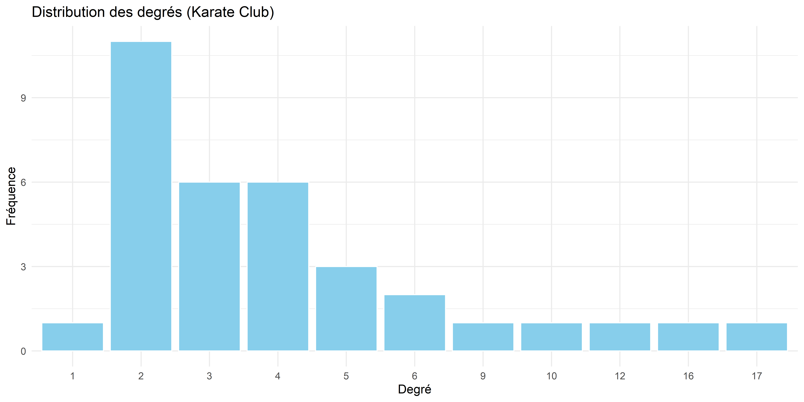
V(g)$degree <- degree(g, mode = "all")
V(g)$btw <- betweenness(g, directed = TRUE)
V(g)$pr <- page_rank(g)$vector
head(data.frame(name = V(g)$name, degree = V(g)$degree, btw = V(g)$btw, pr = V(g)$pr)) name degree btw pr
1 Mr Hi 16 231.0714286 0.09699729
2 Actor 2 9 28.4785714 0.05287692
3 Actor 3 10 75.8507937 0.05707851
4 Actor 4 6 6.2880952 0.03585986
5 Actor 5 3 0.3333333 0.02197795
6 Actor 6 4 15.8333333 0.02911115Comment choisir une centralité ?
Note
Un trou structural = un lien manquant entre deux alters.
Le manager qui les connecte devient un broker : combine infos que personne d’autre ne relie.
À retenir
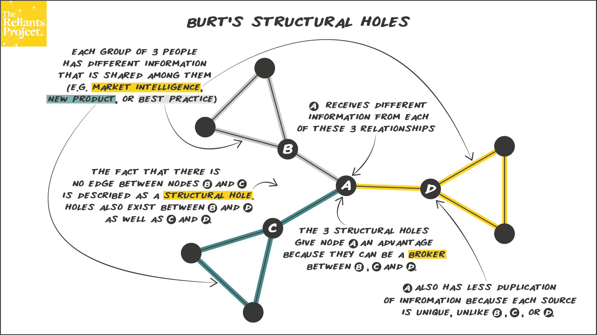
Mr Hi Actor 2 Actor 3 Actor 4 Actor 5 Actor 6 Actor 7 Actor 9
4 4 4 4 3 3 3 4
Actor 10 Actor 14 Actor 15 Actor 16 Actor 19 Actor 20 Actor 21 Actor 23
2 4 2 2 2 3 2 2
Actor 24 Actor 25 Actor 26 Actor 27 Actor 28 Actor 29 Actor 30 Actor 31
3 3 3 2 3 3 3 4
Actor 32 Actor 33 Actor 8 Actor 11 Actor 12 Actor 13 Actor 18 Actor 22
3 4 4 3 1 2 2 2
Actor 17 John A
2 4 edges_friends <- readr::read_csv("../data_full/friends/friends_full_series_edgelist.csv")
g_friends <- igraph::graph_from_data_frame(
edges_friends,
directed = FALSE
) |>
igraph::simplify(remove.loops = TRUE, edge.attr.comb = list(weight = "sum", "ignore"))
V(g_friends)$degree <- igraph::degree(g_friends)
V(g_friends)$betweenness <- igraph::betweenness(g_friends)
V(g_friends)$coreness <- igraph::coreness(g_friends)
friends_deg_core <- tibble::tibble(
name = V(g_friends)$name,
degree = V(g_friends)$degree,
coreness = V(g_friends)$coreness
) |>
dplyr::arrange(dplyr::desc(degree)) |>
dplyr::slice_head(n = 10)
friends_deg_core |>
gt() |>
fmt_number(
columns = c(degree, coreness),
decimals = 0,
use_seps = TRUE
) |>
tab_header(
title = md("**Centralité et noyau k-core dans le réseau _Friends_**"),
subtitle = md("Top 10 personnages par **degré** (nombre de connexions) et leur appartenance au **k-core**.")
) |>
cols_label(
name = md("**Personnage**"),
degree = md("**Degré**<br><span style='font-weight:400;'>Nb de voisins</span>"),
coreness = md("**k-core**<br><span style='font-weight:400;'>Noyau du réseau</span>")
) |>
tab_style(
style = list(
cell_fill(color = "#f0f2f5"),
cell_text(weight = "bold")
),
locations = cells_column_labels(everything())
) |>
opt_table_outline() |>
opt_row_striping() |>
tab_options(
table.font.size = px(14),
heading.align = "center"
) |>
tab_source_note(
md("Ce tableau montre les **personnages les plus connectés** du réseau, ainsi que le **noyau k-core** auquel ils appartiennent (cœur structurel du graphe).")
)| Centralité et noyau k-core dans le réseau Friends | ||
|---|---|---|
| Top 10 personnages par degré (nombre de connexions) et leur appartenance au k-core. | ||
| Personnage | Degré Nb de voisins |
k-core Noyau du réseau |
| Ross | 359 | 14 |
| Joey | 353 | 14 |
| Chandler | 342 | 14 |
| Monica | 339 | 14 |
| Phoebe | 334 | 14 |
| Rachel | 331 | 14 |
| Woman | 70 | 12 |
| Gunther | 44 | 11 |
| Mr Geller | 43 | 14 |
| Mrs Geller | 41 | 12 |
| Ce tableau montre les personnages les plus connectés du réseau, ainsi que le noyau k-core auquel ils appartiennent (cœur structurel du graphe). | ||
g_friends <- igraph::graph_from_data_frame(
edges_friends,
directed = FALSE
) |>
igraph::simplify(remove.loops = TRUE, edge.attr.comb = list(weight = "sum", "ignore"))
V(g_friends)$degree <- igraph::degree(g_friends)
V(g_friends)$constraint <- igraph::constraint(g_friends)
burt_df <- tibble::tibble(
name = V(g_friends)$name,
degree = V(g_friends)$degree,
constraint = V(g_friends)$constraint
)
friends_burt_top <- burt_df |>
dplyr::arrange(constraint) |>
dplyr::slice_head(n = 10)
friends_burt_top |>
gt() |>
fmt_number(
columns = degree,
decimals = 0,
use_seps = TRUE
) |>
fmt_number(
columns = constraint,
decimals = 3
) |>
tab_header(
title = md("**Personnages en position de trou structural (_Friends_)**"),
subtitle = md("Les 10 personnages avec la **plus faible contrainte de Burt** : ce sont ceux qui relient des groupes peu connectés entre eux (rôles de **brokers**).")
) |>
cols_label(
name = md("**Personnage**"),
degree = md("**Degré**"),
constraint = md("**Contrainte de Burt**<br><span style='font-weight:400;'>Plus c’est faible, plus la position est “broker”</span>")
) |>
tab_style(
style = list(
cell_fill(color = "#f0f2f5"),
cell_text(weight = "bold")
),
locations = cells_column_labels(everything())
) |>
opt_table_outline() |>
opt_row_striping() |>
tab_options(
table.font.size = px(14),
heading.align = "center"
) |>
tab_source_note(
md("Ce tableau met en évidence les **acteurs en position de trou structural** : ils connectent des parties du réseau peu reliées et accèdent à une **information moins redondante**.")
)| Personnages en position de trou structural (Friends) | ||
|---|---|---|
| Les 10 personnages avec la plus faible contrainte de Burt : ce sont ceux qui relient des groupes peu connectés entre eux (rôles de brokers). | ||
| Personnage | Degré | Contrainte de Burt Plus c’est faible, plus la position est “broker” |
| Bandleader | 18 | 0.254 |
| Dennis Phillips | 18 | 0.254 |
| Ashley | 14 | 0.260 |
| Fat Girl | 14 | 0.260 |
| Gert | 14 | 0.260 |
| Little Girl | 14 | 0.260 |
| Second Girl | 14 | 0.260 |
| Girl | 23 | 0.266 |
| Terry | 15 | 0.275 |
| Clown | 13 | 0.284 |
| Ce tableau met en évidence les acteurs en position de trou structural : ils connectent des parties du réseau peu reliées et accèdent à une information moins redondante. | ||
g_friends_tbl <- as_tbl_graph(g_friends)
# choisir un broker, ex. "Bandleader"
ego_broker <- ego(g_friends, order = 1, nodes = "Bandleader")[[1]]
g_ego <- induced_subgraph(g_friends, ego_broker)
as_tbl_graph(g_ego) |>
ggraph(layout = "fr") +
geom_edge_link(alpha = 0.3) +
geom_node_point(size = 4) +
geom_node_text(aes(label = name), repel = TRUE, size = 3) +
theme_void()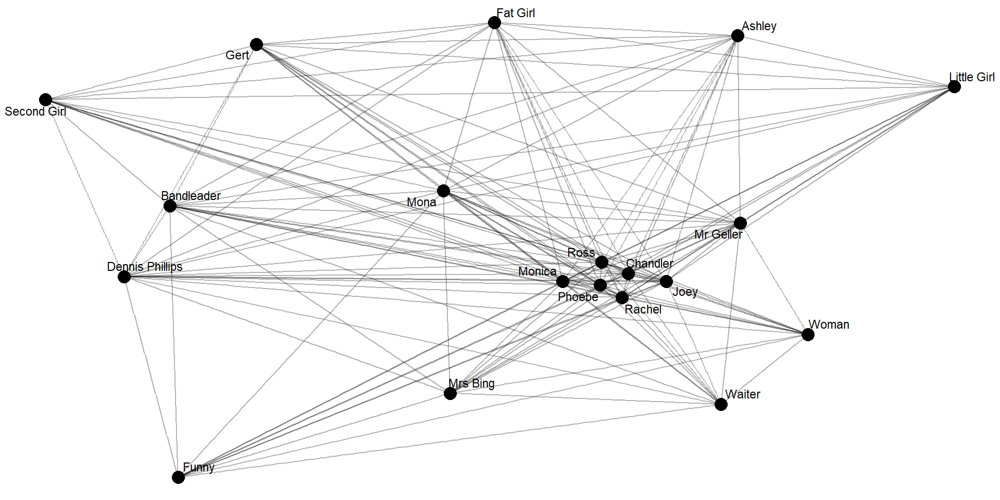
tbl_undirected |>
activate(nodes) |>
mutate(comm = as.factor(group_louvain())) |>
ggraph(layout = "fr") +
geom_edge_link(alpha = 0.2, colour = "grey50") +
geom_node_point(aes(fill = comm), size = 4, shape = 21) +
geom_node_text(aes(label = name), repel = TRUE, size = 3) +
theme_void()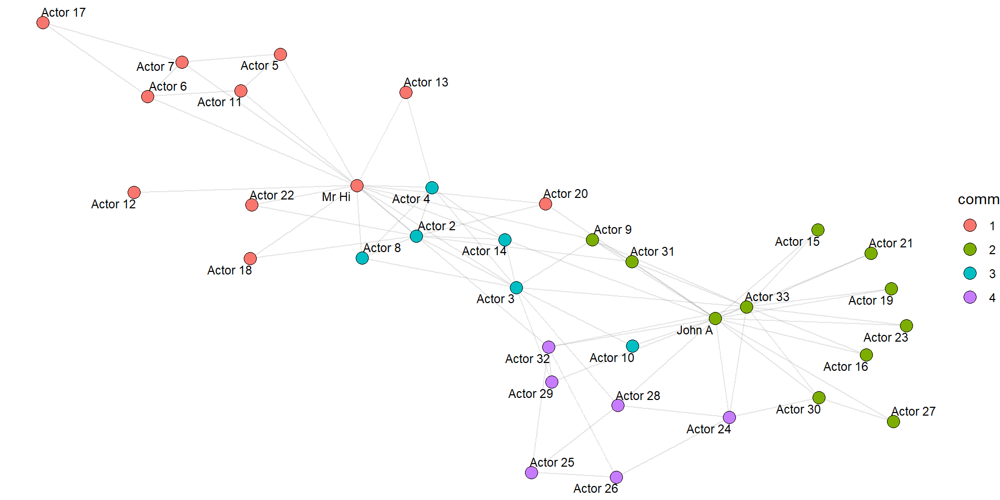
Interprétation marketing
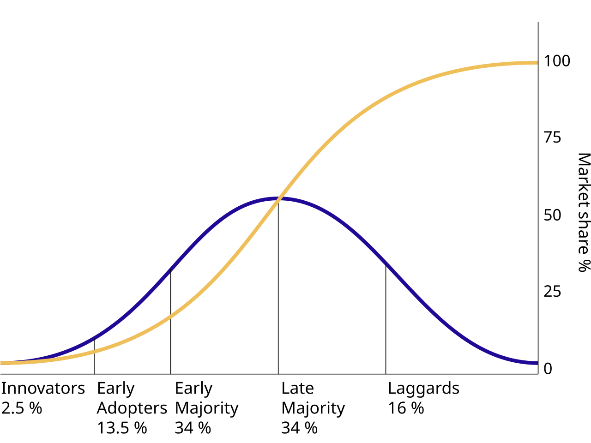
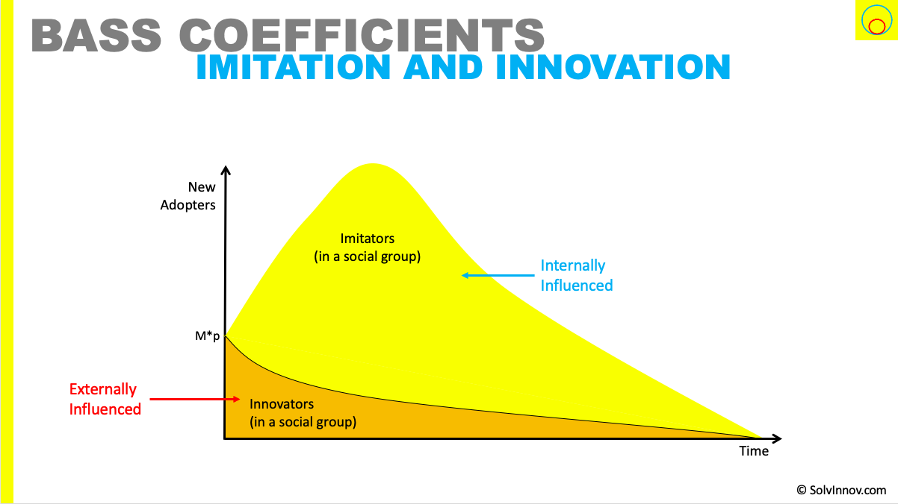
Si la vidéo ne s’affiche pas, lien direct : GEPHI - Introduction to Network Analysis and Visualization (Tutorial)
Comment l’ordinateur stocke le graphe ?
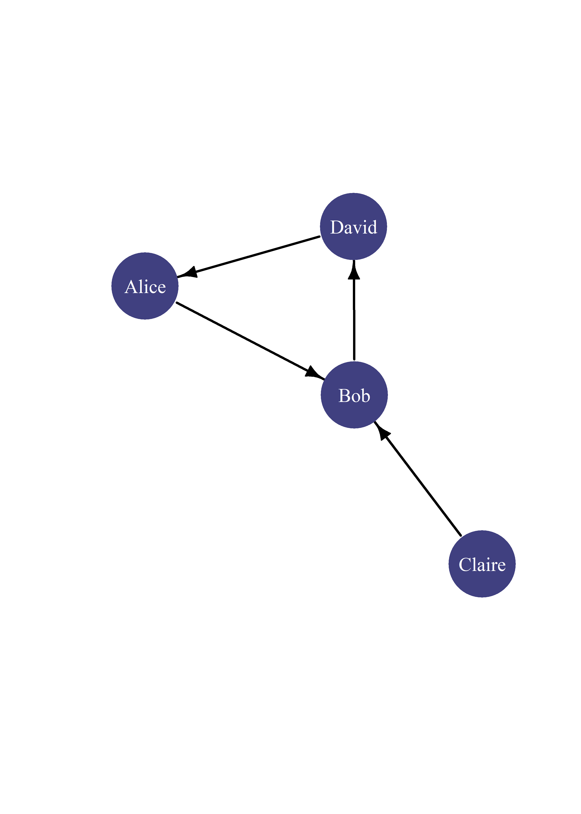
1. La Matrice d’Adjacence format mathématique (matrice)
On lit : ligne (source) \(\to\) Colonne (cible).
2. La Liste d’arêtes : format fichier (Excel / CSV)
C’est simplement la liste des “1” de la matrice, format le plus courant.